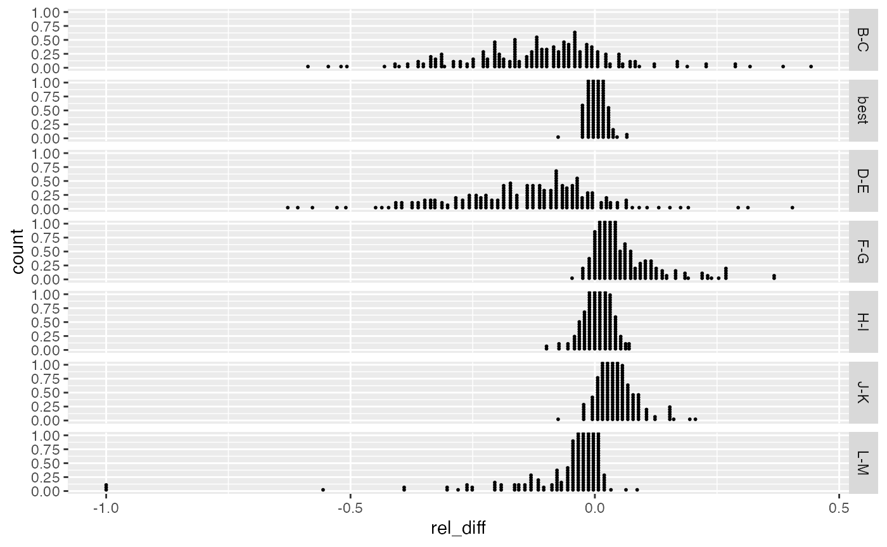
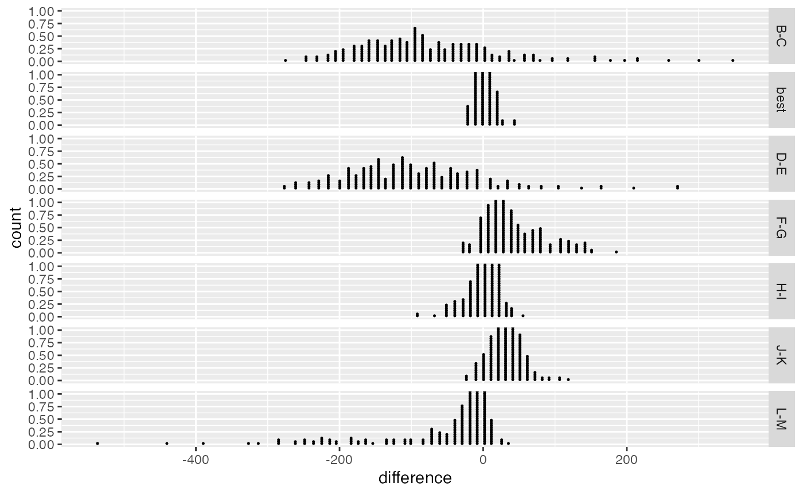
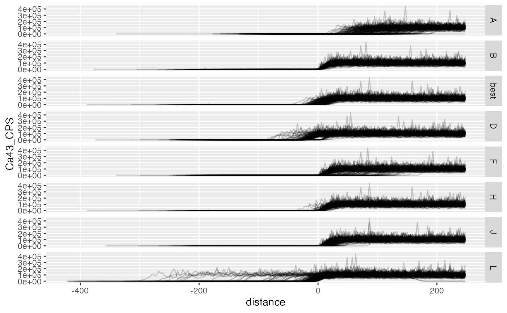
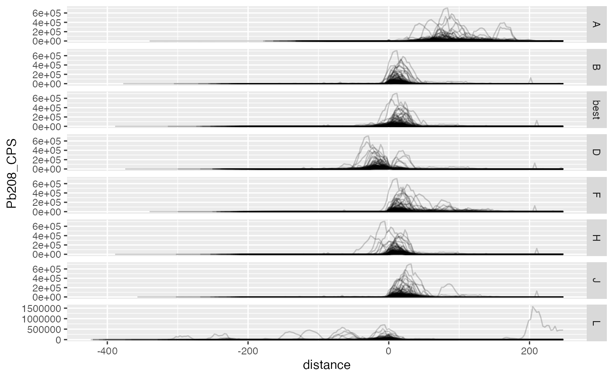

preprocess_data.RmdThis document both details the process of preparing the valve data for analysis and when executed performs the data preparation steps.
The header of the document specifies the locations of the input files (or directories):
print(params$inputs) #> $chemistry_dir #> [1] "../extdata/Data/Geochemical Time-Series" #> #> $baseline_specimens #> [1] "../extdata/Mussel Metrics Data - Baseline.xlsx" #> #> $lod #> [1] "../extdata/Std recoveries comp D1-7 reproc.xlsx" #> #> $meausurements #> [1] "../extdata/Data/Bivalve Transect Datums.xlsx"
as well as the outputs:
print(params$outputs) #> $chemistry #> [1] "../data/valve_chemistry.rds" #> #> $lod #> [1] "../data/lower_detection_limits.rds" #> #> $measurements #> [1] "../data/valve_measurements.rds" #> #> $valve_data #> [1] "../data/valve_data.rds" #> #> $element_info #> [1] "../data/element_info.rds"
These settings can be changed as needed.
The elktoeChemistry R package contains the source data and functions needed for the data processing.
library(elktoeChemistry) #> Warning: package 'dplyr' was built under R version 3.6.2 library(stringr)
The elktoeChemistry packages includes a data.frame with information on the study specimens exposed to the experiment. Variables ending in:
_0 are measurements at baseline;_1 are measurements when the specimen was pulled from experiment;_d are differences between baseline and end (*_1 - *_0).str(mussels_wide) #> 'data.frame': 144 obs. of 47 variables: #> $ site : chr "LiTN 1" "LiTN 1" "LiTN 1" "LiTN 1" ... #> $ id : chr "P165" "P118" "P161" "P114" ... #> $ river : chr "Little Tennessee" "Little Tennessee" "Little Tennessee" "Little Tennessee" ... #> $ species : chr "L. fasciola" "L. fasciola" "L. fasciola" "L. fasciola" ... #> $ dry_weight_g_1 : num 5.7 6.3 8.1 6.4 NA 53 34.4 37.4 NA 13.3 ... #> $ buoyant_weight_g_1: num 1.6 2 2.3 1.4 NA 8.7 10.4 4.8 NA 3 ... #> $ length_mm_1 : num 34 36 35 33.8 NA 78 71 70 68.9 49.5 ... #> $ width_mm_1 : num 21 23 25 25 NA 38 34 36 36.3 25 ... #> $ height_mm_1 : num 14 14 17 13.9 NA 30 27 25 23.8 17.5 ... #> $ date_1 : Date, format: "2013-09-19" "2013-09-19" ... #> $ dead_1 : int 0 0 0 0 NA 0 0 0 1 0 ... #> $ s_dry_1 : num 0.146 0.422 1.25 0.468 NA ... #> $ s_buoyant_1 : num -0.3919 -0.0249 0.2503 -0.5754 NA ... #> $ s_volume_1 : num 0.216 0.641 1.515 0.682 NA ... #> $ s_width_1 : num 0.258 0.925 1.592 1.592 NA ... #> $ s_height_1 : num 0.262 0.262 1.423 0.223 NA ... #> $ s_length_1 : num 0.401 0.893 0.647 0.352 NA ... #> $ volume_1 : num 9996 11592 14875 11745 NA ... #> $ corb_density_1 : num 29.6 29.6 29.6 29.6 29.6 29.6 29.6 29.6 29.6 29.6 ... #> $ dry_weight_g_0 : num 3.8 3.3 4.8 2.4 NA NA NA NA NA NA ... #> $ buoyant_weight_g_0: num NA NA NA NA 1.9 15.3 12.4 12.3 10.1 3.7 ... #> $ length_mm_0 : num 29.6 29.2 29.4 26.8 43.3 78.3 71 70.9 69 48 ... #> $ width_mm_0 : num 18.3 17.6 19.7 16 23 37.4 34.4 36.1 36.5 24.5 ... #> $ height_mm_0 : num 11.6 10.5 13.5 10 13.3 30.2 21.9 24.5 23.5 16.8 ... #> $ date_0 : Date, format: "2013-04-02" "2013-04-02" ... #> $ dead_0 : int 0 0 0 0 0 0 0 0 0 0 ... #> $ s_dry_0 : num -0.729 -0.959 -0.269 -1.373 NA ... #> $ s_buoyant_0 : num NA NA NA NA -1.4 ... #> $ s_volume_0 : num -0.772 -1.008 -0.363 -1.302 -1.885 ... #> $ s_width_0 : num -0.642 -0.875 -0.175 -1.409 -1.989 ... #> $ s_height_0 : num -0.6665 -1.0921 0.0687 -1.2856 -2.1728 ... #> $ s_length_0 : num -0.682 -0.78 -0.731 -1.371 -2.202 ... #> $ volume_0 : num 6283 5396 7819 4288 13245 ... #> $ corb_density_0 : num 29.6 29.6 29.6 29.6 29.6 29.6 29.6 29.6 29.6 29.6 ... #> $ lost_10_or_dead : num NA NA NA NA NA 1 1 1 1 1 ... #> $ lost_wt_or_dead : num NA NA NA NA NA 1 1 1 1 1 ... #> $ days : 'difftime' num 170 170 170 399 ... #> ..- attr(*, "units")= chr "days" #> $ p_buoyant_weight_d: num NA NA NA NA NA ... #> $ s_buoyant_d : num NA NA NA NA NA ... #> $ buoyant_weight_g_d: num NA NA NA NA NA -6.6 -2 -7.5 NA -0.7 ... #> $ s_dry_d : num 0.874 1.381 1.519 1.841 NA ... #> $ dry_weight_g_d : num 1.9 3 3.3 4 NA NA NA NA NA NA ... #> $ volume_d : num 3713 6196 7056 7457 NA ... #> $ width_mm_d : num 2.7 5.4 5.3 9 NA ... #> $ height_mm_d : num 2.4 3.5 3.5 3.9 NA ... #> $ length_mm_d : num 4.4 6.8 5.6 7 NA ... #> $ dead : int 0 0 0 0 NA 0 0 0 1 0 ... #> - attr(*, "reshapeWide")=List of 5 #> ..$ v.names: NULL #> ..$ timevar: chr "post" #> ..$ idvar : chr "id" "species" "river" "site" #> ..$ times : int 1 0 #> ..$ varying: chr [1:15, 1:2] "dry_weight_g_1" "buoyant_weight_g_1" "length_mm_1" "width_mm_1" ...
The mussels_wide dataset does not include data on those specimen held out at baseline. The file ../extdata/Mussel Metrics Data - Baseline.xlsx contains these data. We add these data to mussels_wide.
baseline_specimens <- readxl::read_xlsx( path = params$inputs$baseline_specimens, skip = 1L, col_names = c("id", "weight_g_0", "length_mm_0", "width_mm_0", "height_mm_0", "gravid", "species") ) %>% filter(!is.na(id)) %>% mutate_at(2:5, as.numeric) %>% mutate( buoyant_weight_g_0 = if_else(species == "A. rav.", weight_g_0, NA_real_), dry_weight_g_0 = if_else(species == "L. fas.", weight_g_0, NA_real_), volume_0 = length_mm_0 * width_mm_0 * height_mm_0, species = if_else(species == "A. rav.", "A. raveneliana", "L. fasciola") ) %>% select(-weight_g_0, -gravid) # Append to mussels_wide mussels_wide <- mussels_wide %>% bind_rows(baseline_specimens)
The chemical time series data from the LA-ICP-MS runs are contained ../extdata/Data/Geochemical Time-Series. Each transect is contained in a separate xlsx file. Some transects are excluded from analysis due to the shape of the transect or other irregularities seen in the scans.
# Files to exclude from analyses exclude_files <- c( # Horizontal (fly-scanning) transects "2-A4-4", "8-C474-5", "27-C531-2", "11-C482-1", "11-C483-1", # Excluding C497 due to unusual structure at the mantle edge "16-C497-1", "16-C497-2", "16-C497-3", # ??? Per notes: This shell does not exist. "45-P139-2" )
valve_files <- list.files( path = params$inputs$chemistry_dir, full.names = TRUE, recursive = TRUE, include.dirs = FALSE) # remove exclusions valve_files <- valve_files[!str_detect(valve_files, glue::glue_collapse(exclude_files, sep = "|"))] raw_data <- purrr::map(valve_files, readxl::read_excel) sheets <- purrr::map_chr(valve_files, readxl::excel_sheets) file_names <- str_extract(valve_files, "(?<=[1-9]/).*(?=\\.xlsx)") names(raw_data) <- file_names
# Check sheet names == file name if(length(sheets) != length(file_names)){ warning("Different # of files and sheets") } valve_files[!str_detect(file_names, sheets)] #> [1] "../extdata/Data/Geochemical Time-Series/Drawer 1/5C463.1.xlsx" #> [2] "../extdata/Data/Geochemical Time-Series/Drawer 1/8C472.2.xlsx" #> [3] "../extdata/Data/Geochemical Time-Series/Drawer 3/20-C509-1.xlsx" #> [4] "../extdata/Data/Geochemical Time-Series/Drawer 3/26-C530-1.xlsx" #> [5] "../extdata/Data/Geochemical Time-Series/Drawer 4/35-P110-2.xlsx" #> [6] "../extdata/Data/Geochemical Time-Series/Drawer 5/40-P123-2.xlsx" #> [7] "../extdata/Data/Geochemical Time-Series/Drawer 6/51-P157-1.xlsx" #> [8] "../extdata/Data/Geochemical Time-Series/Drawer 6/51-P158-1.xlsx" #> [9] "../extdata/Data/Geochemical Time-Series/Drawer 6/51-P158-2.xlsx" #> [10] "../extdata/Data/Geochemical Time-Series/Drawer 6/51-P158-3.xlsx" #> [11] "../extdata/Data/Geochemical Time-Series/Drawer 6/51-P158-4.xlsx" #> [12] "../extdata/Data/Geochemical Time-Series/Drawer 6/51-P159-1.xlsx"
valve_chemistry <- bind_rows(raw_data, .id = "file_name") %>% dplyr::select( file_name, time = ElapsedTime_s, scan_distance =`Dist (µm)`, note = Notes, everything() ) str(valve_chemistry) #> tibble [116,122 × 28] (S3: tbl_df/tbl/data.frame) #> $ file_name : chr [1:116122] "1A1.1" "1A1.1" "1A1.1" "1A1.1" ... #> $ time : num [1:116122] 0 0.576 1.152 1.728 2.304 ... #> $ scan_distance: num [1:116122] NA NA NA NA NA NA NA NA NA NA ... #> $ note : chr [1:116122] NA NA NA NA ... #> $ Pb208_CPS : num [1:116122] -15 -15 -15 -15 -15 ... #> $ Ca43_CPS : num [1:116122] -77.6 -177.6 222.4 22.4 -77.6 ... #> $ Mg_ppm_m24 : num [1:116122] -5292 5249 1344 23380 474 ... #> $ Mg_ppm_m25 : num [1:116122] 15439 2124 -1697 130057 -16303 ... #> $ Cr_ppm_m53 : num [1:116122] 742 -2155 -1249 26967 3579 ... #> $ Mn_ppm_m55 : num [1:116122] 3190 582 555 8285 269 ... #> $ Fe_ppm_m57 : num [1:116122] -147387 7853 -24038 -239015 94293 ... #> $ Co_ppm_m59 : num [1:116122] 104.5 -269.4 -36.5 -362.9 -256 ... #> $ Ni_ppm_m60 : num [1:116122] -4285 -555 -609 46288 3253 ... #> $ Cu_ppm_m63 : num [1:116122] 61 593 -700 -4711 709 ... #> $ Cu_ppm_m65 : num [1:116122] -395 -173 -340 1370 -395 ... #> $ Zn_ppm_m66 : num [1:116122] 1108 -768 1614 26001 -1758 ... #> $ Zn_ppm_m68 : num [1:116122] -44179 2512 2351 66711 1588 ... #> $ As_ppm_m75 : num [1:116122] 2379 -3342 1970 -8265 4387 ... #> $ Se82_CPS : num [1:116122] -0.413 -280.413 -40.413 -40.414 79.596 ... #> $ Kr83_CPS : num [1:116122] -106.3 53.7 -186.3 -26.3 53.7 ... #> $ Sr_ppm_m88 : num [1:116122] 1.345 0.588 -0.469 -4.668 1.345 ... #> $ Mo_ppm_m95 : num [1:116122] 5.36 2.34 -1.87 -18.6 5.36 ... #> $ Cd_ppm_m111 : num [1:116122] -4021 0 1404 0 -4022 ... #> $ Sn_ppm_m118 : num [1:116122] 333 -1293 -116 4557 -490 ... #> $ Ba_ppm_m138 : num [1:116122] 3.05 1.33 89.8 -10.57 -517.49 ... #> $ Hg_ppm_m202 : num [1:116122] -1383 -370 295 6670 -309 ... #> $ Pb_ppm_m208 : num [1:116122] 165.9 72.6 -58 -576.8 166.2 ... #> $ U_ppm_m238 : num [1:116122] 2.668 1.166 -0.932 -9.264 2.669 ...
hold <- valve_chemistry %>% filter(!is.na(scan_distance)) %>% group_by(file_name) %>% mutate( x_time = c(0.576, diff(time)), x_dist = c(2.88, diff(scan_distance)), has_on = str_detect(note, "[Oo]n"), has_off = str_detect(note, "[Oo]ff") ) # Are all the elapsed times the same within 0.01 hold %>% summarise( same_time_diffs = all((x_time - 0.01) < x_time[2] & x_time[2] < (x_time + 0.01), na.rm = TRUE) ) %>% filter(!same_time_diffs) %>% nrow() %>% {if(. > 0) warning("not all the elapsed time are within 0.01")} #> `summarise()` ungrouping output (override with `.groups` argument) # Are all the scan distances within 0.01? hold %>% summarise( same_dist_diffs = all((x_dist - 0.01) < x_dist[1] & x_dist[1] < (x_dist + 0.01), na.rm = TRUE) ) %>% filter(!same_dist_diffs) %>% nrow() %>% {if(. > 0) warning("not all the scan distances are within 0.01")} #> `summarise()` ungrouping output (override with `.groups` argument) ## Do all files have an "on" and "off" indicator in the note field? hold %>% summarise( n_on = sum(has_on, na.rm = TRUE), n_off = sum(has_off, na.rm = TRUE), any_on = any(has_on, na.rm = TRUE), any_off = any(has_off, na.rm = TRUE) ) %>% filter( !any_on | !any_off | n_on > 1 | n_off > 1 ) %>% nrow() %>% {if(. > 0) warning("not all files have on and off indicators")} #> `summarise()` ungrouping output (override with `.groups` argument)
Next, we identify the laser on/off points which were manually annotated in the xlsx files and prepare the valve_chemistry data for further processing. The result is written to ../data/valve_chemistry.rds
valve_chemistry <- valve_chemistry %>% group_by(file_name) %>% # Identify laser on/off points mutate( is_laser_on = str_detect(note, "[Oo]n$"), is_laser_off = str_detect(note, "[Oo]ff$"), is_laser_on = if_else(is.na(is_laser_on), FALSE, is_laser_on), is_laser_off = if_else(is.na(is_laser_off), FALSE, is_laser_off), on_row = which(is_laser_on), off_row = which(is_laser_off), last_val_row = min(which(is.na(Ca43_CPS)) - 1), rn = row_number(), # scan_distance is NA before the on_row, add it back scan_distance = if_else( is.na(scan_distance), -2.881 * (on_row - rn) , scan_distance) ) %>% # Remove rows at end of each file with no data filter(rn <= last_val_row) %>% dplyr::select( -is_laser_on, -is_laser_off, -rn, -on_row, -off_row, -last_val_row ) %>% ungroup() %>% mutate(file_name = clean_ids(file_name)) %>% tidyr::separate(file_name, sep = "-", into = c("id", "transect")) %>% dplyr::select(id, transect, distance = scan_distance, everything(), -time, -note) saveRDS(valve_chemistry, file = params$outputs$chemistry)
The excel file `was prepared by the UT LA-ICP-MS lab and contains lower limit of detection information data for elemental concentrations. Here, we use his data to find the average per element per drawer and write the results to../data/lower_detection_limits.rds`.
lod <- readxl::read_excel( path = params$inputs$lod, sheet = "Without Stats" ) %>% mutate( standard = stringr::str_extract(Comments, "614|612") ) %>% group_by(standard, Date) %>% mutate( standard_run = 1:n(), ) %>% ungroup() %>% select(-Date, -Time, -"Duration(s)", -DateTime, -Comments) %>% filter(Exclude == 0) %>% select( drawer = Drawer, output = Output, source_file = `Source file`, standard, standard_run, matches("CPS|ppm") ) %>% tidyr::gather( key = "key", value = "value", -drawer, -output, -source_file, -standard, -standard_run, na.rm = TRUE) %>% mutate( drawer = as.numeric(stringr::str_remove(drawer, "D")), measure = stringr::str_replace(stringr::str_extract(key, "_(Int2SE|LOD)$"), "_", ""), measure = if_else(is.na(measure), "raw", measure), element = stringr::str_replace(key, "_(Int2SE|LOD)$", "") ) %>% select( drawer, standard, output, source_file, standard_run, element, measure, value ) %>% # Just keep the lower limit of detection filter(measure == "LOD") %>% group_by(element, drawer, standard) %>% summarise( lod_mean = mean(value) ) %>% group_by(element, drawer) %>% summarise( lod = mean(lod_mean) ) #> `summarise()` regrouping output by 'element', 'drawer' (override with `.groups` argument) #> `summarise()` regrouping output by 'element' (override with `.groups` argument) saveRDS(lod, file = params$outputs$lod)
This section loads and saves measurements of valves registered by using a ruler to measure distance between points along each transect manually identified as key transition points a valve’s anatomy (e.g., the transition between nacre and prismatic layer).
Each sheet of ../extdata/Data/Bivalve Transect Datums.xlsx cooresponds to a drawer from the LA-ICP-MS processing. T
sheets <- readxl::excel_sheets(params$inputs$meausurements) import_sheets <- 1:6 ## Note excluding Drawer 7 (see below) valve_measurements <- purrr::map_dfr( .x = sheets[import_sheets], .f = ~ read_measurements_sheet(params$inputs$meausurements, .x) %>% munge_measurements() ) %>% bind_rows( ## Drawer 7 import #### # the structure of Drawer is slightly different from the others and # requires special handling readxl::read_excel( path = params$inputs$meausurements, sheet = 7) %>% filter(grepl("^PAT", `...2`)) %>% dplyr::select(file_name = `...2`, matches("Length")) %>% filter(!is.na(`Length from 1 to 2 (mm)`)) %>% mutate( file_name = stringr::str_remove(file_name, "^PAT:"), drawer = 7) %>% munge_measurements() ) %>% ## HARD CODES ##### add_row( # Added 2018-11-10: # 12-C485-2 is missing the measurement from 1 to 4 (the prismatic/periostracum # transition). The bivalve datum spreadsheet notes: This shell is broken # and does not have a point 4 before the break. Setting this distance to 10 # samples before the transition to point 5 file_name = "12-C485-2", drawer = 2, from = "1", to = "4", distance = 18.275 - (10 * .02881) ) %>% mutate( # Added 2018-11-10: # The units of 1 to 5 measurement for 2A6.1 are off by 10^3 distance = if_else(file_name == "2A6.1" & to == 5, distance/1000, distance) # Added 2018-11-10: # Removed (at a later date) # if the distance from 1 to 2 is 0 then there is no gap from laser on to # inner epoxy, but this leads to non-unique breaks in the create_layer_idFUN # function ==> adding small gap # distance = case_when( # to == "2" & distance == 0 ~ -0.02881 , # TRUE ~ distance # ) ) %>% ## END HARD CODES ## # Remove exclusions filter(!(file_name %in% exclude_files)) %>% filter(!is.na(distance)) %>% mutate(file_name = clean_ids(file_name)) %>% tidyr::separate(file_name, sep = "-", into = c("id", "transect")) %>% group_by(drawer, id, transect) %>% # put distance in same units as chemistry data mutate(distance = distance * 100) %>% arrange(id, transect, from, to) %>% # 2018-11-11: remove cases where to == "2" and distance == 0 # These indicate records without a nacre measurement and interfere with the # processes below filter(!(to == "2" & distance == 0)) %>% # Create the patterns of layer transitions mutate( # NOTE: this works because all(from == "1") == TRUE; this could be generalized to a # data format where from varies layer_transition = case_when( to == "2" ~ "ipx_ncr", # Handle cases where transect does not cross nacre to == "3" & "2" %in% to ~ "ncr_psm", to == "3" & !("2" %in% to) ~ "ipx_psm", to == "4" ~ "psm_pio", to == "5" ~ "pio_opx", to == "6" ~ "opx_off" ), annuli_transition = str_extract(to, "[A-Z]"), is_layer = (to %in% 1:6), is_annuli = str_detect(to, "[A-Z]") ) %>% tidyr::nest() %>% # Add a record for laser on -> inner epoxy mutate(data = purrr::map( .x = data, .f = ~ .x %>% add_row( from = "1", to = "1", distance = 0, layer_transition = "on_ipx", annuli_transition = NA_character_, is_layer = TRUE, is_annuli = FALSE, .before = 1 ) ) ) %>% tidyr::unnest() %>% ungroup() #> New names: #> * `` -> ...4 #> New names: #> * `` -> ...4 #> New names: #> * `` -> ...4 #> New names: #> * `` -> ...4 #> New names: #> * `` -> ...4 #> New names: #> * `` -> ...4 #> New names: #> * `` -> ...1 #> * `` -> ...2 #> * `` -> ...3 #> * `` -> ...4 #> * `` -> ...5 #> * ... #> Warning: `cols` is now required. #> Please use `cols = c(data)`
# Which id-transect have missing layer transition measurments? valid_patterns <- c("on_ipx:(ipx_ncr:ncr_psm|ipx_psm):psm_pio:pio_opx:opx_off") valve_measurements %>% filter(is_layer) %>% group_by(id, transect) %>% summarise( meas_pattern = paste0(layer_transition, collapse = ":"), has_valid_pattern = str_detect(meas_pattern, valid_patterns) ) %>% filter(!has_valid_pattern) #> `summarise()` regrouping output by 'id' (override with `.groups` argument) #> # A tibble: 0 x 4 #> # Groups: id [0] #> # … with 4 variables: id <chr>, transect <chr>, meas_pattern <chr>, #> # has_valid_pattern <lgl>
The resulting dataset identifies the distances between layer transitions (e.g. epoxy to nacre, nacre to prismatic layer, etc) along each LA-ICP-MS transect.
The values in the from and to columns correspond to the following points on a valve, starting for the inner side of the value:
Numbered datums
Alphabetical datums
str(valve_measurements) #> tibble [2,181 × 10] (S3: tbl_df/tbl/data.frame) #> $ drawer : num [1:2181] 1 1 1 1 1 1 1 1 1 1 ... #> $ id : chr [1:2181] "A1" "A1" "A1" "A1" ... #> $ transect : chr [1:2181] "1" "1" "1" "1" ... #> $ from : chr [1:2181] "1" "1" "1" "1" ... #> $ to : chr [1:2181] "1" "2" "3" "4" ... #> $ distance : num [1:2181] 0 75.7 911.2 1202.9 1253 ... #> $ layer_transition : chr [1:2181] "on_ipx" "ipx_ncr" "ncr_psm" "psm_pio" ... #> $ annuli_transition: chr [1:2181] NA NA NA NA ... #> $ is_layer : logi [1:2181] TRUE TRUE TRUE TRUE TRUE TRUE ... #> $ is_annuli : logi [1:2181] FALSE FALSE FALSE FALSE FALSE FALSE ... ## Save measurements #### saveRDS(valve_measurements, file = params$outputs$measurements)
This section joins the valve_chemistry data with the valve_measurements data by id/transect.
chem_ids <- unique(paste0(valve_chemistry$id, valve_chemistry$transect)) meas_ids <- unique(paste0(valve_measurements$id, valve_measurements$transect)) ## IDs founds in chemistry data but not in measurement setdiff(chem_ids, meas_ids) #> character(0) ## IDs founds in measurement data but not in chemistry setdiff(meas_ids, chem_ids) #> [1] "P1592" ## IDs in mussels_wide but not in valve_chemistry setdiff(mussels_wide$id, unique(valve_chemistry$id)) #> [1] "C497" "C527" "P102" "P138" # C497 was excluded # Not sure about the others ## IDs in valve_chemistry but not in mussels_wide setdiff(unique(valve_chemistry$id), mussels_wide$id) #> character(0) # most (all?) of these are baseline IDs
valve_data <- inner_join( valve_chemistry %>% group_by(id, transect) %>% mutate(obs = 1:n()) %>% select(-distance, -contains("CPS")) %>% tidyr::nest(.key = "chemistry"), valve_chemistry %>% group_by(id, transect) %>% mutate(obs = 1:n()) %>% select(id, transect, distance, obs, contains("CPS")) %>% tidyr::nest(.key = "distance"), by = c("id", "transect") ) %>% ## Link chemistry & datum measurements #### inner_join( valve_measurements %>% # dplyr::select(-drawer) %>% group_by(id, transect) %>% tidyr::nest(.key = "measures"), by = c("id", "transect") ) #> Warning: `.key` is deprecated #> Warning: `.key` is deprecated #> Warning: `.key` is deprecated
This section tests various methods of identifying reference points from which to calculate distances. We then select the best method for each transect as the one with the smallest mean squared error (difference between the transect distance measured manually and the distance between the inner and outer reference points determined by each method).
The following list specifies the methods used to find alignment. Each element of the list is a different method or different arguments for a method. For example, method A uses the epoxy on (on_) transition point as the reference transition point and then uses that point as the “zero point” from which to align the anatomy. Method B uses the inner expoxy transition point (ipx_) as the reference transition point, then from there identifies the zero point using the id_changepoint function which based on the changepoint::cpt.meanvar function (Killick and Eckley 2014). Except for method A, the methods are paired: one to identify the inner edge of the valve, the another to identify the outer edge. The pairs are B-C, D-E, etc.
## Specifications for the alignment methods to test #### test_methods <- list( A = list( rt = "on_", zf = identity, zfa = list() ), B = list( rt = "ipx_", zf = id_changepoint, zfa = list(.var = "Ca43_CPS", .use_up_to_row = 150, .method = "AMOC", .outer = FALSE) ), C = list( rt = "_opx", zf = id_changepoint, zfa = list(.var = "Ca43_CPS", .use_up_to_row = 150, .method = "AMOC", .outer = TRUE) ), D = list( rt = "ipx_", zf = id_changepoint, zfa = list(.var = "Pb208_CPS", .use_up_to_row = 150, .method = "AMOC", .outer = FALSE) ), E = list( rt = "_opx", zf = id_changepoint, zfa = list(.var = "Pb208_CPS", .use_up_to_row = 150, .method = "AMOC", .outer = TRUE) ), `F` = list( rt = "ipx_", zf = pbca_minpoint, zfa = list(.use_up_to_row = 150, .outer = FALSE) ), G = list( rt = "_opx", zf = pbca_minpoint, zfa = list(.use_up_to_row = 150, .outer = TRUE) ), H = list( rt = "ipx_", zf = maxpoint, zfa = list(.var = "ratio", .use_up_to_row = 150, .outer = FALSE) ), I = list( rt = "_opx", zf = maxpoint, zfa = list(.var = "ratio", .use_up_to_row = 150, .outer = TRUE) ), J = list( rt = "ipx_", zf = maxpoint, zfa = list(.var = "ratio", .use_up_to_row = 150, .threshold = function(x) quantile(x, .95), .outer = FALSE) ), K = list( rt = "_opx", zf = maxpoint, zfa = list(.var = "ratio", .use_up_to_row = 150, .threshold = function(x) quantile(x, .95), .outer = TRUE) ), L = list( rt = "ipx_", zf = maxpoint, zfa = list(.var = "Pb208_CPS", .use_up_to_row = 150, .threshold = 1000, .outer = FALSE) ), M = list( rt = "_opx", zf = maxpoint, zfa = list(.var = "Pb208_CPS", .use_up_to_row = 150, .threshold = 1000, .outer = TRUE) ) )
We apply all these methods:
method_tests <- purrr::map2_dfr( .x = test_methods, .y = names(test_methods), .f = ~ apply_ref_method(valve_data %>% select(-lod), .x, .y)) %>% mutate(idref_method = factor(idref_method)) #> Warning: `cols` is now required. #> Please use `cols = c(distance)` #> Warning: `cols` is now required. #> Please use `cols = c(distance)` #> Warning: `cols` is now required. #> Please use `cols = c(distance)` #> Warning: `cols` is now required. #> Please use `cols = c(distance)` #> Warning: `cols` is now required. #> Please use `cols = c(distance)` #> Warning: `cols` is now required. #> Please use `cols = c(distance)` #> Warning: `cols` is now required. #> Please use `cols = c(distance)` #> Warning: `cols` is now required. #> Please use `cols = c(distance)` #> Warning: `cols` is now required. #> Please use `cols = c(distance)` #> Warning: `cols` is now required. #> Please use `cols = c(distance)` #> Warning: `cols` is now required. #> Please use `cols = c(distance)` #> Warning in max(pracma::findpeaks(dir(Pb208_CPS[nn < .use_up_to_row]), threshold #> = .threshold)[, : no non-missing arguments to max; returning -Inf #> Warning in max(pracma::findpeaks(dir(Pb208_CPS[nn < .use_up_to_row]), threshold #> = .threshold)[, : no non-missing arguments to max; returning -Inf #> Warning in max(pracma::findpeaks(dir(Pb208_CPS[nn < .use_up_to_row]), threshold #> = .threshold)[, : no non-missing arguments to max; returning -Inf #> Warning in max(pracma::findpeaks(dir(Pb208_CPS[nn < .use_up_to_row]), threshold #> = .threshold)[, : no non-missing arguments to max; returning -Inf #> Warning: `cols` is now required. #> Please use `cols = c(distance)` #> Warning in max(pracma::findpeaks(dir(Pb208_CPS[nn < .use_up_to_row]), threshold #> = .threshold)[, : no non-missing arguments to max; returning -Inf #> Warning in max(pracma::findpeaks(dir(Pb208_CPS[nn < .use_up_to_row]), threshold #> = .threshold)[, : no non-missing arguments to max; returning -Inf #> Warning in max(pracma::findpeaks(dir(Pb208_CPS[nn < .use_up_to_row]), threshold #> = .threshold)[, : no non-missing arguments to max; returning -Inf #> Warning in max(pracma::findpeaks(dir(Pb208_CPS[nn < .use_up_to_row]), threshold #> = .threshold)[, : no non-missing arguments to max; returning -Inf #> Warning in max(pracma::findpeaks(dir(Pb208_CPS[nn < .use_up_to_row]), threshold #> = .threshold)[, : no non-missing arguments to max; returning -Inf #> Warning: `cols` is now required. #> Please use `cols = c(distance)`
We then calculate the lengths of each transect within a valve as measured “by hand”.
valve_lengths <- valve_measurements %>% group_by(id, transect) %>% filter( sum(grepl("ipx_", layer_transition)) > 0, sum(grepl("opx_", layer_transition)) > 0 ) %>% summarise( on_opx_distance = distance[grepl("_opx", layer_transition)], on_ipx_distance = distance[grepl("ipx_", layer_transition)], valve_length = on_opx_distance - on_ipx_distance ) %>% mutate( idt = paste(id, transect, sep = "_") ) %>% ungroup %>% select(idt, valve_length) #> `summarise()` regrouping output by 'id' (override with `.groups` argument)
## Detected inner/outer edges and calculate lengths between the two #### tm <- test_methods[2:length(test_methods)] tm_lgl <- c(purrr::map_lgl(tm, ~ .x$zfa$.outer))
# lengths using all methods except "A" chem_valve_lengths <- method_tests %>% filter(idref_method != "A") %>% group_by(idref_method, id, transect, .drop = TRUE) %>% summarise( outer_edge_rn = min(which(layer == "opx"), na.rm = TRUE), inner_edge_rn = max(which(layer == "ipx"), na.rm = TRUE) ) %>% mutate( use_inner = idref_method %in% names(tm)[!tm_lgl], use_outer = idref_method %in% names(tm)[tm_lgl], idref_grouping = case_when( idref_method %in% c("B", "C") ~ "B-C", idref_method %in% c("D", "E") ~ "D-E", idref_method %in% c("F", "G") ~ "F-G", idref_method %in% c("H", "I") ~ "H-I", idref_method %in% c("J", "K") ~ "J-K", idref_method %in% c("L", "M") ~ "L-M", idref_method %in% c("N", "O") ~ "N-O" ) ) %>% group_by(idref_grouping, id, transect) %>% summarise( inner_edge_rn = inner_edge_rn[use_inner], outer_edge_rn = outer_edge_rn[use_outer] ) %>% mutate( valve_obs = outer_edge_rn - inner_edge_rn, auto_detect_valve_length = valve_obs * 2.881, idt = paste(id, transect, sep = "_") ) %>% ungroup() %>% select(idref_grouping, inner_edge_rn, outer_edge_rn, idt, auto_detect_valve_length) #> `summarise()` regrouping output by 'idref_method', 'id' (override with `.groups` argument) #> `summarise()` regrouping output by 'idref_grouping', 'id' (override with `.groups` argument) # lengths using method "A" chem_valve_lengths_A <- method_tests %>% filter(idref_method == "A") %>% group_by(idref_method, id, transect) %>% summarise( outer_edge_rn = min(which(layer == "opx"), na.rm = TRUE), inner_edge_rn = max(which(layer == "ipx"), na.rm = TRUE) ) %>% ungroup() %>% mutate( idref_method = as.character(idref_method), idt = paste(id, transect, sep = "_") ) %>% select( idref_grouping = idref_method, idt, inner_edge_rn, outer_edge_rn ) #> `summarise()` regrouping output by 'idref_method', 'id' (override with `.groups` argument) chem_valve_lengths <- bind_rows(chem_valve_lengths, chem_valve_lengths_A)
## Compare valve lengths measured to valve lengths auto detected #### valve_length_compare <- chem_valve_lengths %>% left_join(valve_lengths, by = c("idt")) %>% mutate( difference = auto_detect_valve_length - valve_length, rel_diff = difference/valve_length ) best_method_by_idt <- valve_length_compare %>% filter(idref_grouping != "A", !is.na(rel_diff)) %>% left_join( chem_valve_lengths_A %>% select(idt, A_iedge = inner_edge_rn), by = "idt" ) %>% group_by(idt, .drop = TRUE) %>% mutate( is_min_rel_diff = abs(rel_diff) == min(abs(rel_diff), na.rm = TRUE), iedge_Adiff = abs(A_iedge - inner_edge_rn) ) %>% filter(is_min_rel_diff) %>% mutate( is_min_Adiff = iedge_Adiff == min(iedge_Adiff) ) %>% # filter(sum(is_min_Adiff) > 1) %>% summarise( which_method = ifelse(sum(is_min_Adiff) > 1, sample(1:length(is_min_Adiff), 1), 1), best_method = idref_grouping[which_method], inner_edge_rn = inner_edge_rn[which_method], outer_edge_rn = outer_edge_rn[which_method], difference = difference[which_method], rel_diff = rel_diff[which_method] ) %>% select(-which_method) #> `summarise()` ungrouping output (override with `.groups` argument) valve_length_compare <- bind_rows( valve_length_compare, mutate(best_method_by_idt, idref_grouping = "best"))
In relative terms:
ggplot( data = valve_length_compare %>% filter(idref_grouping != "A"), aes(x = rel_diff) ) + geom_dotplot(binwidth = .01, dotsize = .5) + facet_grid(idref_grouping ~ .) #> Warning: Removed 9 rows containing non-finite values (stat_bindot).

In absolute terms:
ggplot( data = valve_length_compare %>% filter(idref_grouping != "A"), aes(x = difference) ) + geom_dotplot(binwidth = 10, dotsize = .25) + facet_grid(idref_grouping ~ .) #> Warning: Removed 9 rows containing non-finite values (stat_bindot).

inner_edge <- method_tests %>% mutate(idt = paste(id, transect, sep = "_")) %>% filter(distance < 250, idref_method %in% c("A", "B", "D", "F", "H", "J", "L")) inner_edge_best <- inner_edge %>% left_join( valve_length_compare %>% filter(idref_grouping == "best") %>% dplyr::select(idt, best_method), by = "idt" ) %>% filter(str_detect(best_method, as.character(idref_method))) %>% mutate( idref_method = "best" ) plotdt <- bind_rows(inner_edge, inner_edge_best)
ggplot( data = plotdt , aes(x = distance, y = Ca43_CPS, group = idt) ) + geom_line(alpha = .2) + facet_grid(idref_method ~ .)

ggplot( data = plotdt , aes(x = distance, y = Pb208_CPS, group = idt) ) + geom_line(alpha = .2) + facet_grid(idref_method ~ ., scales = "free_y")

best_grouping <- valve_length_compare %>% filter(idref_grouping != "A") %>% group_by(idref_grouping) %>% summarise( MB = mean(difference, na.rm = TRUE), MSE = mean(difference^2, na.rm = TRUE), MAD = mean(abs(difference), na.rm = TRUE), ) %>% filter(MSE == min(MSE)) %>% pull(idref_grouping) #> `summarise()` ungrouping output (override with `.groups` argument)
distances <- method_tests %>% mutate(idt = paste(id, transect, sep = "_")) %>% filter(idref_method %in% c("A", "B", "D", "F", "H", "J", "L")) %>% left_join( valve_length_compare %>% filter(idref_grouping == "best") %>% dplyr::select(idt, best_method), by = "idt" ) %>% filter(str_detect(best_method, as.character(idref_method))) %>% group_by(id, transect) %>% tidyr::nest() valve_data <- valve_data %>% select(-distance) %>% left_join(distances, by = c("id", "transect")) %>% select(everything(), distance = data)
valve_annual_layer_availability <- valve_data %>% select(id, transect, distance) %>% tidyr::unnest() %>% group_by(id, transect) %>% filter(layer == "ncr") %>% group_by(annuli, add = TRUE) %>% summarise(n = n() > 1) %>% tidyr::spread( key = annuli, value = n, fill = FALSE ) #> Warning: `cols` is now required. #> Please use `cols = c(distance)` #> Warning: The `add` argument of `group_by()` is deprecated as of dplyr 1.0.0. #> Please use the `.add` argument instead. #> This warning is displayed once every 8 hours. #> Call `lifecycle::last_warnings()` to see where this warning was generated. #> `summarise()` regrouping output by 'id', 'transect' (override with `.groups` argument) valve_data <- valve_data %>% left_join(valve_annual_layer_availability, by = c("id", "transect"))
## Add covariates and outcome variables #### mussel_info <- valve_data %>% ungroup() %>% distinct(id) %>% # add river, site, and other info left_join(mussels_wide, by = 'id') %>% mutate( prop_weight_lost = (buoyant_weight_g_1 - buoyant_weight_g_0)/buoyant_weight_g_0, river = if_else(is.na(river), "Baseline", river), site = if_else(river == "Baseline", "Baseline", site), species = if_else(is.na(species), true = case_when( grepl('A', id) ~ 'A. raveneliana', TRUE ~ 'L. fasciola'), false = species), moribund = (prop_weight_lost < -0.3) * 1, moribund = ifelse(is.na(moribund), 0, moribund), dead = ifelse(river == 'Baseline', 0, dead), final_status = ifelse(dead, 'Dead', ifelse(moribund, 'Moribund', 'Alive')), final_status = factor(final_status, ordered = TRUE, levels = c('Alive', 'Moribund', 'Dead')), site_num = as.integer(if_else(site == "Baseline", "1", substr(site, 6, 6))), baseline_volume = volume_0, baseline_weight = if_else(species == "A. raveneliana", buoyant_weight_g_0, dry_weight_g_0) ) %>% dplyr::select(id, site, site_num, river, species, dead, baseline_weight, baseline_volume, prop_weight_lost, moribund, final_status) %>% left_join(n_annuli, by = "id") valve_data <- valve_data %>% left_join(mussel_info, by = "id")
agrp_any_A: id has any transect with nacre annuli Aagrp_any_B: id has any transect with nacre annuli Bagrp_first_transect: first transect of an idagrp_first_transect_with_A: first transect of an id with nacre annuli Aagrp_transect_most_A: longest transects of an id with the most annuli Aagrp_first_transect_with_B: first transect of an id with nacre annuli Bagrp_first_transect_with_AB: first transect of an id with nacre annuli A AND B# Find the transect of an id with the longest section of annuli A most_A <- valve_data %>% select(id, transect, distance) %>% tidyr::unnest(cols = c(distance)) %>% group_by(id, transect, layer, annuli) %>% summarise(d = n()) %>% filter(layer == "ncr", annuli == "A") %>% group_by(id) %>% filter(d == max(d)) %>% select(id, transect) %>% mutate( agrp_transect_most_A = TRUE ) #> `summarise()` regrouping output by 'id', 'transect', 'layer' (override with `.groups` argument) valve_data <- valve_data %>% group_by(id) %>% mutate( agrp_any_A = any(A), agrp_any_B = any(B), agrp_first_transect = (transect == min(transect)), firstA_transect = ifelse( agrp_any_A, transect[min(which(A))], ""), firstB_transect = ifelse( agrp_any_B, transect[min(which(B))], ""), agrp_first_transect_with_A = (transect == firstA_transect), agrp_first_transect_with_B = (transect == firstB_transect), agrp_first_transect_with_AB = (transect == firstA_transect) & (transect == firstB_transect) ) %>% left_join(most_A, by = c("id", "transect")) %>% mutate( agrp_transect_most_A = if_else(is.na(agrp_transect_most_A), FALSE, agrp_transect_most_A) ) %>% select(-firstA_transect, -firstB_transect)
saveRDS(valve_data, file = params$outputs$valve_data)
This uses the PeriodicTable package (Idé 2017)
data("periodicTable", package = "PeriodicTable") element_info <- left_join(valve_data$chemistry[[1]], valve_data$distance[[1]], by = "obs") %>% select(-ends_with("value_raw"), -ends_with("censor")) %>% select(-idt, -idref_method, -best_method) %>% create_long_analysis_data() %>% distinct(element) %>% mutate( symb = stringr::str_extract(substr(element, 1, 2), '[A-Za-z]+'), element_label = stringr::str_replace(element, '_ppm', '') ) %>% left_join( periodicTable %>% dplyr::select(symb, name, group, period, type, mass, color), by = 'symb') saveRDS(element_info, file = params$outputs$element_info)
valve_data %>% select(id, transect,species, measures) %>% mutate( drawer = purrr::map_dbl(measures, ~.x$drawer[1]) ) %>% select(-measures, -transect) %>% distinct(id, species, drawer) %>% group_by(species) %>% tidyr::nest() %>% mutate( picks = purrr::map(data, ~sample_n(.x, 2)) ) %>% select(-data) %>% tidyr::unnest() #> Warning: `cols` is now required. #> Please use `cols = c(picks)` #> # A tibble: 4 x 3 #> # Groups: species [2] #> species id drawer #> <chr> <chr> <dbl> #> 1 A. raveneliana C472 1 #> 2 A. raveneliana A5 1 #> 3 L. fasciola P147 6 #> 4 L. fasciola P105 4 # Oops! Forgot to set the random seed. The results were: # A tibble: 4 x 3 # species id drawer # <chr> <chr> <dbl> # 1 A. raveneliana C468 1 # 2 A. raveneliana C531 3 # 3 L. fasciola P108 4 # 4 L. fasciola P106 4
Idé, Julien. 2017. PeriodicTable: Periodic Table of the Elements. https://CRAN.R-project.org/package=PeriodicTable.
Killick, Rebecca, and Idris A. Eckley. 2014. “changepoint: An R Package for Changepoint Analysis.” Journal of Statistical Software 58 (3): 1–19. http://www.jstatsoft.org/v58/i03/.